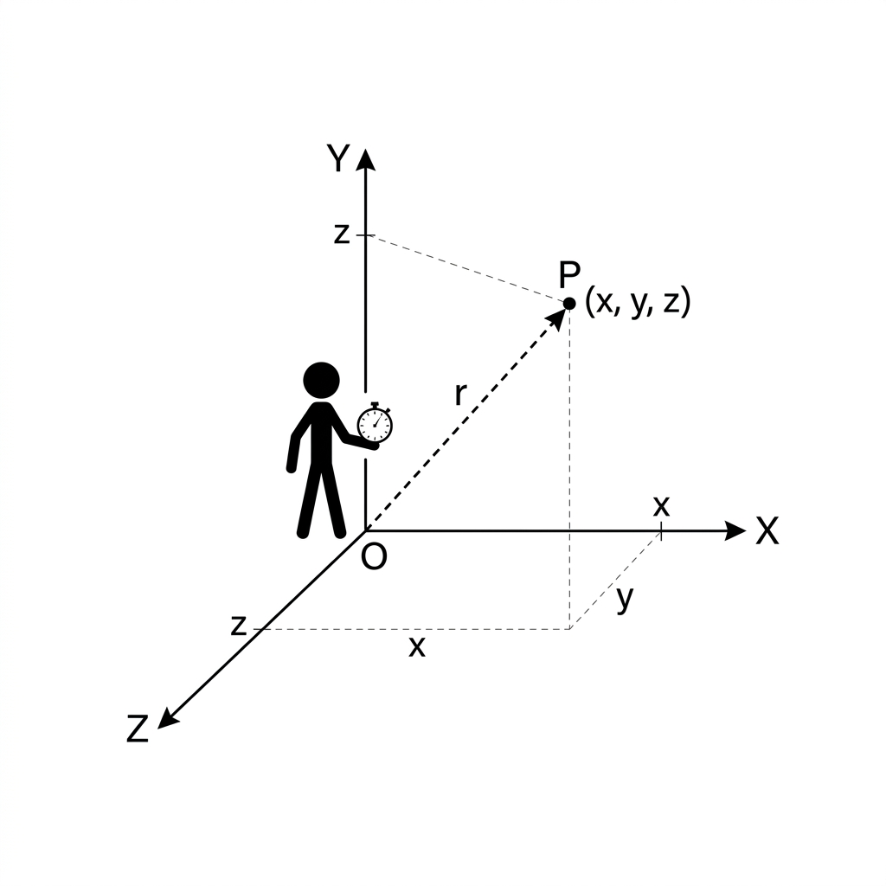
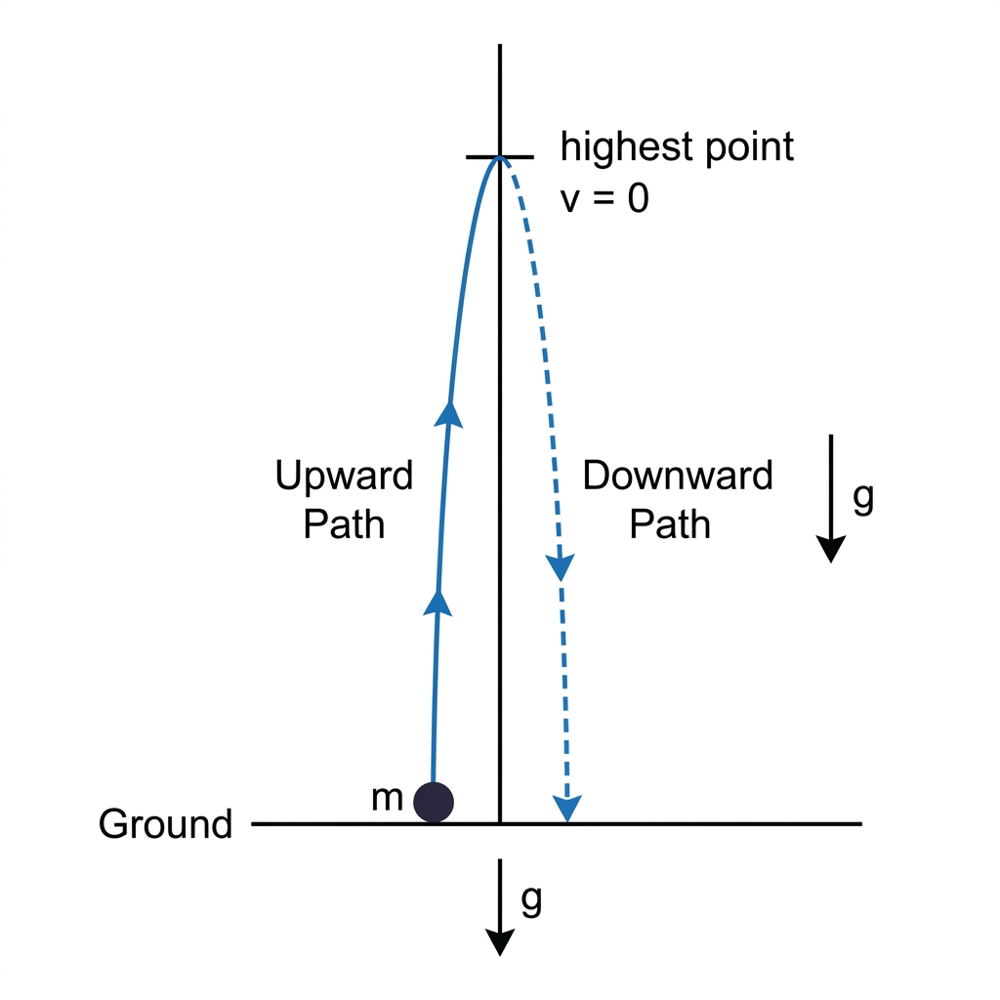
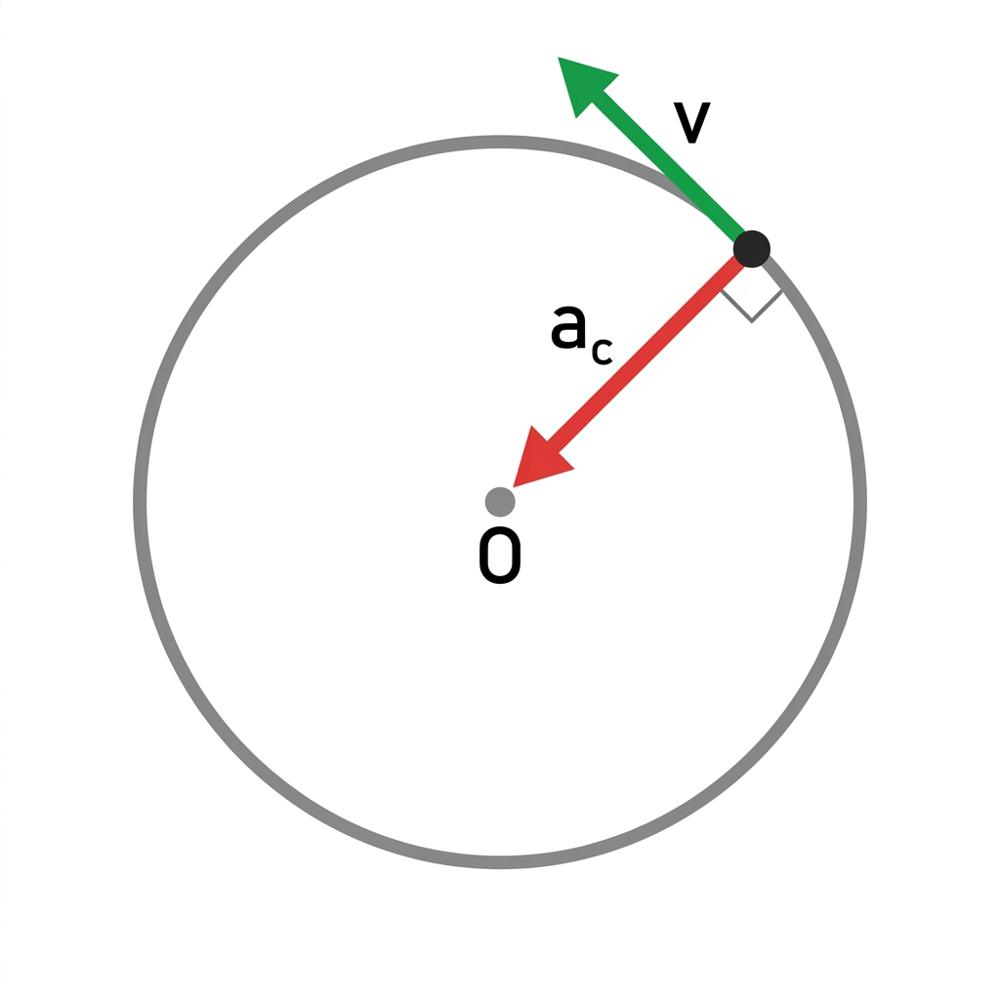

Before studying motion, we must define the system from which we observe it.
Definitions
Frame of Reference: A coordinate system (usually X, Y, Z axes) with a clock attached to it, relative to which an observer describes the position, velocity, and acceleration of an object.
Point Object: An object whose size is much smaller than the distance it covers. In kinematics, we often treat cars, trains, and even planets as point objects to simplify calculations.

Frame of Reference and Observer
📝 Practice Problems
A train is moving at a constant speed. Identify the frame of reference in which a passenger sitting inside appears to be at rest.
Solution: The passenger appears at rest with respect to the train's frame of reference (the frame moving with the train). This is because both the passenger and the train move together with the same velocity.
Why do we treat planets as point objects when studying their motion around the Sun, even though they are huge?
Solution: We treat planets as point objects because their size (diameter ~10³-10⁴ km) is negligible compared to the distances involved in their orbital motion (distances ~10⁸-10⁹ km). This simplification allows us to focus on the motion of the planet's center of mass without considering its size.
Can two different observers describe the motion of the same object differently? Give an example.
Solution: Yes, two observers in different frames of reference can describe the same motion differently.
Example: A ball dropped by a passenger in a moving train:
• For the passenger (train's frame): The ball falls straight down.
• For an observer on the ground: The ball follows a parabolic path because it has both vertical (due to gravity) and horizontal (train's velocity) components of motion.
2. Distance vs Displacement
In physics, distance and displacement describe the motion of an object from different perspectives.
Definitions
Distance: The total length of the actual path covered by an object. It is a scalar quantity.
Displacement: The change in position ($\Delta \vec{x} = \vec{x}_f - \vec{x}_i$). It is the shortest distance between initial and final points. It is a vector quantity.
A particle completes three-quarters of a circular track of radius 10 m. Find the distance and magnitude of displacement.
Solution:
Distance = $\frac{3}{4} \times 2\pi R = \frac{3}{4} \times 2\pi \times 10 = \mathbf{15\pi \text{ m}} \approx 47.1$ m
Displacement = Distance from start to final position = $\sqrt{R^2 + R^2} = R\sqrt{2} = 10\sqrt{2} = \mathbf{14.14 \text{ m}}$
Can the magnitude of displacement be greater than the distance traveled? Justify.
Solution: No, the magnitude of displacement can never be greater than the distance traveled.
Reason: Distance is the actual path length (can be curved or zigzag), while displacement is the straight-line distance between start and end points. The shortest distance between two points is always a straight line. Therefore: $\text{Distance} \geq |\text{Displacement}|$
3. Speed vs Velocity
Definitions
Speed: The rate of change of distance. It is a scalar.
Velocity: The rate of change of displacement. It is a vector.
$\vec{v}_{avg} = \frac{\Delta \vec{x}}{\Delta t} = \frac{\text{Net Displacement}}{\text{Total
Time Taken}}$
Case Study: Average Speed Tricks
Case 1: Equal Time Intervals ($t_1 = t_2 = t$):
If a particle moves with speed $v_1$ for time $t$ and $v_2$ for time $t$, then:
$v_{avg} = \frac{v_1 + v_2}{2}$ (Simple arithmetic mean)
Case 2: Equal Distance Intervals ($s_1 = s_2 = s$):
If a particle moves distance $s$ with speed $v_1$ and another distance $s$ with speed $v_2$, then:
$v_{avg} = \frac{2v_1v_2}{v_1 + v_2}$ (Harmonic mean)
Instantaneous Velocity
It is the velocity at an exact point in time. It is the derivative of position $x$ with respect to time $t$.
A car travels 100 km at 50 km/h and then another 100 km at 100 km/h. Calculate the average speed for the entire journey.
Solution: Since equal distances are covered, use harmonic mean:
$v_{avg} = \frac{2v_1v_2}{v_1 + v_2} = \frac{2 \times 50 \times 100}{50 + 100} = \frac{10000}{150} = \mathbf{66.67 \text{ km/h}}$
Alternatively:
Time for first part: $t_1 = \frac{100}{50} = 2$ h
Time for second part: $t_2 = \frac{100}{100} = 1$ h
$v_{avg} = \frac{\text{Total Distance}}{\text{Total Time}} = \frac{200}{3} = \mathbf{66.67 \text{ km/h}}$
If the position of a particle is given by $x(t) = 5t^3 - 3t^2 + 2$ (in meters), find its velocity at $t = 1$ second.
Can a body have zero velocity but non-zero acceleration? Explain with an example.
Solution: Yes, a body can have zero velocity but non-zero acceleration.
Example: When a ball is thrown vertically upward, at the highest point:
• Velocity = 0 (momentarily at rest)
• Acceleration = $g = 9.8$ m/s² (downward, due to gravity)
The ball is still under the influence of gravity even though its velocity is zero at that instant.
5. Kinematic Equations (Equations of Motion)
These equations are valid only when acceleration ($a$) is constant (uniform).
Equations for Constant Acceleration
1. $v = u + at$
2. $s = ut + \frac{1}{2}at^2$
3. $v^2 - u^2 = 2as$
4. $s_n = u + \frac{a}{2}(2n - 1) \quad (\text{Displacement in } n^{th} \text{ second})$
Variables Defined
$u$: Initial Velocity (at $t=0$)
$v$: Final Velocity (at time $t$)
$s$: Displacement (not distance!)
$a$: Constant Acceleration
$t$: Time taken
Important Note
⚠️ "Negative acceleration" doesn't always mean slowing down. It depends on the direction of velocity! If
velocity is already negative and acceleration is negative, the object is speeding up in the negative direction.
📝 Practice Problems
A car starts from rest and accelerates uniformly at 2 m/s² for 10 seconds. Find the distance covered.
When an object is moving vertically near Earth's surface, it experiences a constant acceleration due to gravity ($g \approx 9.8 \text{ m/s}^2$ or $10 \text{ m/s}^2$).
Sign Convention
Usually, we take **Upward as Positive (+)** and **Downward as Negative (-)**. Thus, $a = -g$.
Key Results for Vertical Throw (Initial velocity $u$ upwards)
1. Maximum Height: $H_{max} = \frac{u^2}{2g}$
2. Time to reach $H_{max}$: $t_{up} = \frac{u}{g}$
3. Total Time of Flight: $T = \frac{2u}{g}$
4. Impact Velocity: $v = -u$ (Same speed, opposite direction)

Motion Under Gravity: Upward and Downward Trajectory
📝 Practice Problems
A ball is thrown vertically upward with velocity 30 m/s. Find (a) maximum height reached, and (b) total time of flight. (Take $g = 10$ m/s²)
A ball is thrown upward and returns to the thrower's hand after 4 seconds. What was the initial velocity? (Take $g = 10$ m/s²)
Solution:
Given: Total time $T = 4$ s, $g = 10$ m/s²
Using $T = \frac{2u}{g}$:
$4 = \frac{2u}{10}$
$u = \frac{4 \times 10}{2} = \mathbf{20 \text{ m/s}}$
7. Relative Velocity (1D)
Relative velocity is the velocity of one object as observed from another moving object.
Relative Velocity Formula
$\vec{v}_{AB} = \vec{v}_A - \vec{v}_B$
$\vec{v}_{AB}$ is the "Velocity of A with respect to B".
Practical Rule
To find $v_{AB}$, imagine object B is at rest. To do this, subtract the velocity of B from both objects. The resulting velocity of A is its relative velocity.
📝 Practice Problems
Car A is moving at 60 km/h and car B is moving at 40 km/h in the same direction. Find the velocity of A relative to B.
This means car A appears to move at 20 km/h in the forward direction as seen by someone in car B.
Two trains are moving toward each other with speeds 40 m/s and 30 m/s. What is their relative velocity?
Solution:
When moving in opposite directions, take one as positive and other as negative.
Let $v_A = +40$ m/s, $v_B = -30$ m/s
$v_{AB} = v_A - v_B = 40 - (-30) = 40 + 30 = \mathbf{70 \text{ m/s}}$
They approach each other at 70 m/s.
A man running at 5 m/s observes rain falling vertically at 10 m/s. What is the actual velocity of rain with respect to the ground?
Solution:
This is a 1D problem along vertical direction.
Given: $v_{rain,man} = 10$ m/s (vertical), $v_{man} = 5$ m/s (horizontal)
Since the man observes rain falling vertically (no horizontal component relative to him), the rain has no horizontal velocity component relative to ground either.
Therefore, actual velocity of rain = $\mathbf{10 \text{ m/s}}$ vertically downward.
8. Velocity–Time ($v–t$) Graph Analysis
A velocity-time graph is one of the most powerful tools in kinematics.
Key Properties
Slope of $v–t$ graph: Represents Acceleration ($a = \frac{dv}{dt}$).
Area under $v–t$ graph: Represents Displacement ($s = \int v \, dt$).
Area between $v-t$ curve and time axis (ignoring signs): Represents Distance.
Velocity–Time (v–t) Graph: Slope (Acceleration) and Area (Displacement)
Acceleration–Time ($a-t$) Graph
Area under $a-t$ graph: Represents Change in Velocity ($\Delta v = v_f - v_i$).
📝 Practice Problems
A velocity-time graph is a straight line passing through origin with slope 5 m/s². What does this tell you about the motion?
Solution:
• Since the graph passes through origin: Initial velocity $u = 0$ (starts from rest)
• Slope of $v-t$ graph = acceleration
• Therefore: $a = 5$ m/s² (constant acceleration)
• The object starts from rest and accelerates uniformly at 5 m/s².
The $v-t$ graph of a particle is a triangle with base 10 s and height 20 m/s (starting from origin). Find the total displacement.
Solution:
Displacement = Area under $v-t$ graph
For a triangle: Area = $\frac{1}{2} \times \text{base} \times \text{height}$
$s = \frac{1}{2} \times 10 \times 20 = \mathbf{100 \text{ m}}$
What does a horizontal line in a $v-t$ graph represent?
Solution:
A horizontal line in a $v-t$ graph means:
• Velocity is constant (not changing with time)
• Slope = 0, which means acceleration = 0
• The object is moving with uniform velocity (no acceleration).
5. Uniform Circular Motion
When an object moves in a circle at a constant speed, its direction changes continuously, meaning it is always
accelerating.
Centripetal Acceleration
Even if the speed is constant, the direction changes, creating an acceleration directed toward the center of
the circle.
$a_c = \frac{v^2}{r} = \omega^2 r$
Where:
$v$: Tangential speed
$r$: Radius of the circle
$\omega$: Angular velocity

Uniform Circular Motion: Velocity and Centripetal Acceleration Vectors
Radial vs Tangential Acceleration
Concepts
Radial (Centripetal) Acceleration ($a_c$): Responsible for changing the
direction of velocity. Always present in circular motion.
Tangential Acceleration ($a_t$): Responsible for changing the magnitude
(speed). Present only in non-uniform circular motion.
Net Acceleration: $a_{net} = \sqrt{a_c^2 + a_t^2}$
📝 Quick Summary
🚀 Slope of Position vs Time Graph = Velocity
🚀 Slope of Velocity vs Time Graph = Acceleration
🚀 Area of Velocity vs Time Graph = Displacement
🚀 Centripetal Acceleration = Always points to the center!
📝 Practice Problems
A car moves around a circular track of radius 50 m at a constant speed of 20 m/s. Calculate the centripetal acceleration.
Solution:
Given: $r = 50$ m, $v = 20$ m/s
Using $a_c = \frac{v^2}{r}$:
$a_c = \frac{(20)^2}{50} = \frac{400}{50} = \mathbf{8 \text{ m/s}^2}$ (toward the center)
An object moving in a circle at constant speed has constant velocity. True or False? Justify.
Solution:False.
Reason: Velocity is a vector quantity (has both magnitude and direction). In circular motion at constant speed:
• Speed (magnitude) remains constant
• Direction changes continuously
Since direction changes, velocity is NOT constant. This change in velocity means the object is accelerating (centripetal acceleration).
A particle moves in a circle with decreasing speed. What are the directions of centripetal and tangential accelerations?
Solution:
• Centripetal acceleration ($a_c$): Points toward the center of the circle (always present in circular motion, responsible for changing direction)
• Tangential acceleration ($a_t$): Points opposite to the direction of velocity (since speed is decreasing, this acts as deceleration along the tangent)
Net acceleration: $a_{net} = \sqrt{a_c^2 + a_t^2}$
🎯 Practice Problem Set
A collection of high-quality problems designed to master the concepts of kinematics.
Part A: Class Discussion Problems (Conceptual)
The Paradox of Average Speed: A car travels from A to B at 40 km/h and returns at 60 km/h. Why is the average speed NOT 50 km/h? Calculate the correct value.
Acceleration without Velocity: Can an object have zero velocity but non-zero acceleration? Give a real-world example.
Constant Speed vs Constant Velocity: An object is moving in a circle at a constant speed of 5 m/s. Is its velocity constant? Is it accelerating?
The $s-t$ Graph: Can a position-time graph be a vertical straight line? Why or why not?
Gravity Fall: Two balls of different masses are dropped from the same height in a vacuum. Which one hits the ground first? What if there is air resistance?
Part B: Standard Practice (Numerical Exercises)
Topic 1: Distance, Displacement & Speed
An athlete completes one round of a circular track of diameter 200m in 40s. What will be the distance covered and the displacement at the end of 2 minutes 20 seconds?
A particle moves 3m North, then 4m East, and finally 6m South-West. Find the net displacement from the origin.
A train 100m long is moving with a velocity of 60 km/h. Find the time it takes to cross a bridge 1km long.
If $x(t) = 4t^3 - 2t^2 + 10$, find the acceleration at $t = 3$ units.
A particle covers half its journey with speed $u$ and the other half with speed $v$. Prove the average speed is the harmonic mean.
Topic 2: Equations of Motion
A bullet fired into a wooden block loses half of its velocity after penetrating 20cm. How much further will it penetrate before coming to rest?
A car starting from rest moves with a constant acceleration of 5 m/s² for 10s and then continues with constant velocity. Find the total distance covered in 25s.
A body covers 12m in the 2nd second and 20m in the 4th second of its motion. Find its initial velocity and acceleration.
How much distance does a body cover in the 10th second if it starts from rest and moves with $a = 2 \text{ m/s}^2$?
A jet plane starts from rest and accelerates at 3 m/s² for 200m before taking off. What was its takeoff speed?
Topic 3: Motion Under Gravity
A stone is dropped from a tower 100m high. Simultaneously, another stone is thrown upwards from the base with 50 m/s. When and where will they meet? ($g = 10 \text{ m/s}^2$)
A ball is thrown vertically upwards with a speed of 20 m/s. Find (a) Max height reached, (b) Time taken to return to ground.
A water tap leaks drops at regular intervals of 1s. Find the distance between the 1st and 3rd drop when the 4th drop is just about to leave.
A rocket is fired vertically upwards with a constant acceleration of 20 m/s². After 1 minute, its fuel is exhausted. Find the maximum height reached by the rocket.
A ball dropped from a height $h$ reaches the ground in time $T$. What is its height at time $T/2$?
Topic 4: Graphs & Relative Motion
The velocity-time graph of a body is an isosceles triangle with base 10s and height 20 m/s. Find the total distance covered.
Two trains A and B of length 400m each are moving on two parallel tracks with a uniform speed of 72 km/h in the same direction, with A ahead of B. If B accelerates at 1 m/s², find the time it takes to overtake A.
A person standing on a moving walkway (speed $v_1$) walks at speed $v_2$ relative to the walkway. Find their speed relative to the ground if they walk (a) in same direction, (b) in opposite direction.
Draw the $v-t$ graph for a ball thrown upwards and returning to the hand.
From a $v-t$ graph which is a straight line through the origin, prove that $s \propto t^2$.
Part C: Advanced Challenger Problems
The Chase: A police jeep is chasing a culprit going on a motorbike. The motorbike crosses a turning at 72 km/h. The jeep follows it 10s later at 90 km/h. After what distance from the turning will the jeep catch the motorbike?
Variable Acceleration: A particle's acceleration is given by $a = 3t^2 + 2$. If it starts from rest at $x=0$, find its position $x$ as a function of time.
Relative Free Fall: Two balls are dropped from different heights $h_1$ and $h_2$ at the same time. Show that the distance between them remains constant until the first one hits the ground.
Braking Distance: A driver traveling at 30 m/s sees a red light and applies brakes after a reaction time of 0.5s. If the car decelerates at 5 m/s², find the total distance covered before stopping.
Circular Logic: A particle moves in a circle of radius $R$ such that it covers a distance $s = kt^2$. Find the magnitude of its net acceleration at time $t$.